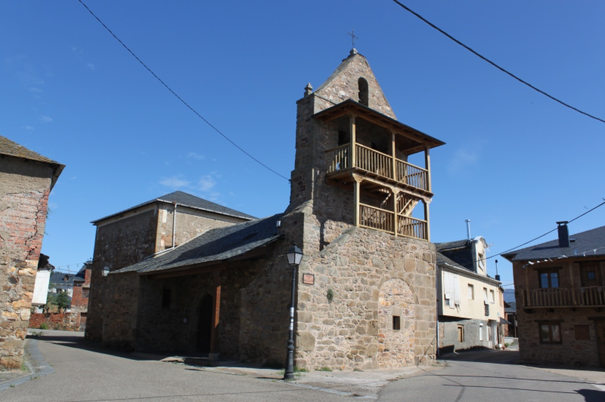
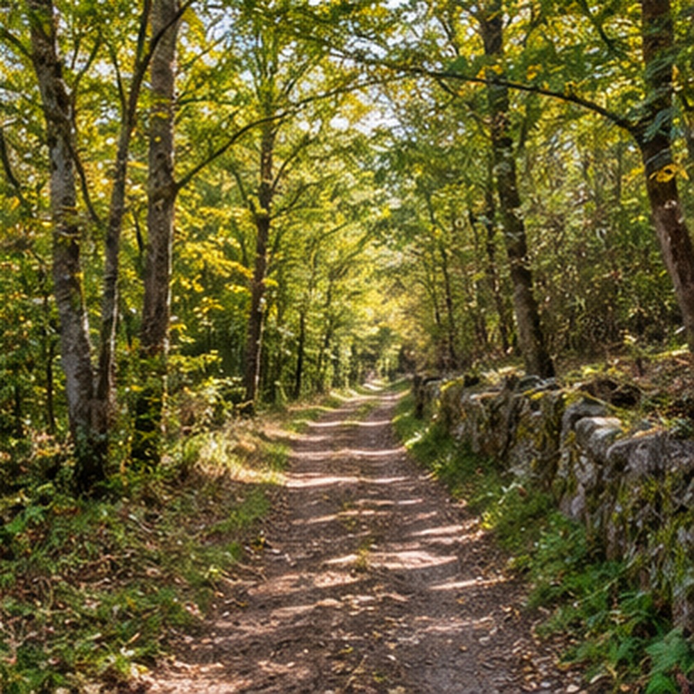

El pueblo de los carreros
Rodanillo fue conocido en el Bierzo Alto y Laciana como “el pueblo de los carros” o “el pueblo de los carreros”. La fabricación y reparación de carros fue un oficio destacado.

Historia, carretería, lagares, fiestas y memoria de un pueblo del municipio de Bembibre.
Rodanillo aparece documentado como núcleo de población desde 1085. Su historia está vinculada al paisaje rural del Bierzo Alto, a la actividad vitivinícola y a la tradición artesanal de los carreros. La iglesia parroquial de San Antolín, la antigua iglesia de San Salvador —hoy ermita del Santo Cristo— y los lagares conservan huellas de distintas épocas.
Rodanillo fue conocido en el Bierzo Alto y Laciana como “el pueblo de los carros” o “el pueblo de los carreros”. La fabricación y reparación de carros fue un oficio destacado.

El Catastro de Ensenada de 1752 recogía nueve lagares en funcionamiento en Rodanillo. El Lagar del Moro fue restaurado y premiado en 2019.

Destacan las castañas entre los productos del entorno, también el magosto tradicional en noviembre.
Fechas recogidas en la guía turística local “Conoce tu pueblo” (2023).
La guía turística local de 2023 señala 1085 como referencia documental del núcleo de población.
La antigua iglesia parroquial de San Salvador aparece documentada; hoy es la ermita del Santo Cristo.
La esquila de la iglesia de San Antolín lleva esta fecha.
La ermita del Santo Cristo conserva parte de un artesonado con la inscripción “Se hizo el 1688”.
El Catastro de Ensenada recoge nueve lagares en funcionamiento en Rodanillo.
El lagar restaurado recibe el primer premio de la Fundación Prada a Tope.
San Antolín es el patrón de Rodanillo. Su festividad se celebra el 2 de septiembre para facilitar la asistencia de los vecinos que viven fuera, la celebración se trasladó al penúltimo sábado de agosto. También hay una fiesta de San Benito en julio: es una celebración distinta y San Benito no es el patrón del pueblo.
Se recoge además la Fiesta del Botillo en febrero, la Cena del Jabalí en torno a las fiestas de agosto, la Gran Chorizada como merienda popular del último día y el magosto en noviembre. El programa y las fechas concretas pueden variar cada año; confirma la información local antes de acudir.

La iglesia, la plaza, los pozos y los caminos son espacios que ayudan a entender la vida cotidiana y la memoria compartida del pueblo.
Rodanillo también cuenta con espacios para el ocio activo. En el mapa local se señalan las piscinas y la zona deportiva; además, los caminos del entorno permiten disfrutar de paseos y senderismo en contacto con el paisaje del Bierzo.
La disponibilidad y el uso de las instalaciones pueden variar según la temporada; conviene confirmar la información local antes de la visita.

El oficio de los carreros dio a Rodanillo un sobrenombre reconocido en el Bierzo Alto y Laciana.
El Catastro de Ensenada registraba nueve lagares en funcionamiento en el pueblo.
La esquila de la iglesia parroquial de San Antolín lleva grabado el año 1645.
El alcornocal se encuentra en el entorno de Cobrana, localidad vecina, no en el núcleo de Rodanillo.
Pequeños hallazgos documentales y artísticos permiten conocer mejor la memoria del pueblo.
Un antiguo libro sacramental de Rodanillo recoge que, desde 1662, algunas personas fallecidas eran enterradas en el interior de la iglesia de San Antolín, diferenciando los espacios “del arco arriba” y “del arco abajo”. El manuscrito, conservado hoy en el Archivo Diocesano de Astorga, contiene registros de bautismos, matrimonios y defunciones de los años 1616–1676.
Leer la historia del libro sacramental ↗La ermita del Santo Cristo, antigua iglesia de San Salvador y situada junto al cementerio, conserva un retablo rococó tras el que se identificó una pintura de Jerusalén. La cámara de un teléfono permitió comprobar en 2021 lo que se sospechaba desde 2004. Además, en la pared este se descubrieron pinturas murales ocultas bajo capas de cal, que representan escenas de la vida de Jesús y siguen pendientes de restauración.
Leer sobre las pinturas ocultas ↗La información histórica de esta página se ha contrastado con la Guía Turística de Rodanillo (2023), “Conoce tu pueblo”.
Consultar la guía turística ↗